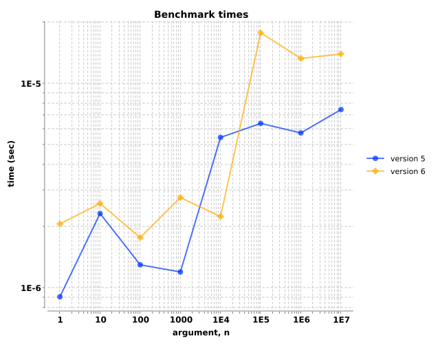
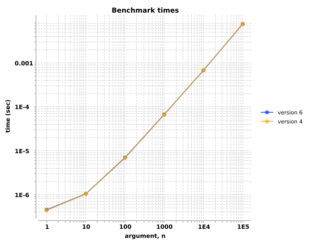
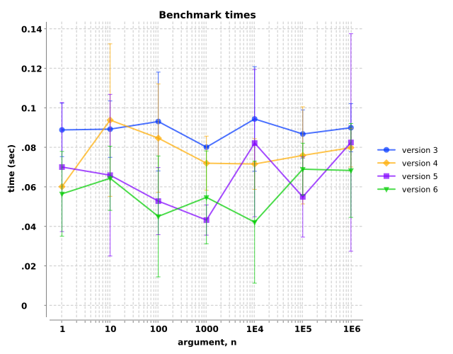
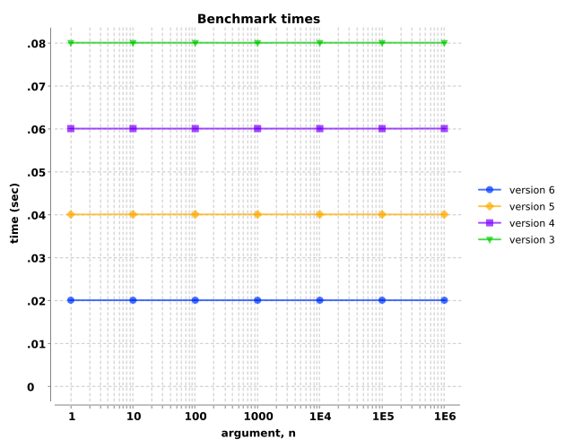
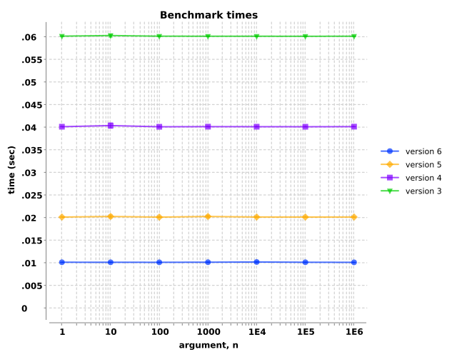
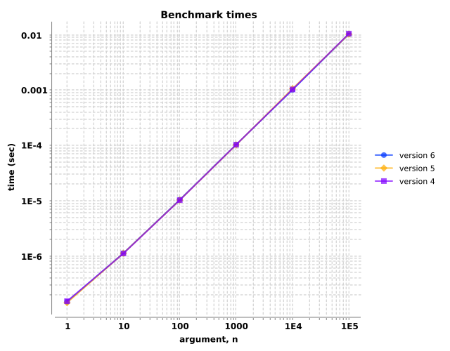

custom `conj`
Version 6 implemented `conj` with transients, so should be faster...
(fn [n] (my-conj (seq-of-n-rand-ints n) :tail-value))
| arg, n | ||||||||
|---|---|---|---|---|---|---|---|---|
| version | 1 | 10 | 100 | 1000 | 10000 | 100000 | 1000000 | 10000000 |
| 6 | 3.7e-07±3.9e-09 | 4.2e-07±4.3e-09 | 4.6e-07±3.4e-09 | 5.2e-07±1.5e-08 | 5.7e-07±1.6e-08 | 9.4e-07±1.7e-08 | 9.7e-07±9.1e-09 | 1.2e-06±3.7e-08 |
| 5 | 1.3e-07±1.7e-09 | 1.7e-07±2.4e-09 | 2.1e-07±2.7e-09 | 2.6e-07±2.2e-09 | 3.0e-07±6.9e-09 | 7.7e-07±1.1e-08 | 8.1e-07±1.1e-08 | 9.7e-07±7.7e-09 |
mapping stuff
Note: Skipped version 5...
(fn [n] (map inc (range-of-length-n n)))
| arg, n | ||||||
|---|---|---|---|---|---|---|
| version | 1 | 10 | 100 | 1000 | 10000 | 100000 |
| 6 | 8.4e-08±2.8e-09 | 1.2e-07±2.0e-09 | 1.7e-07±5.4e-09 | 2.0e-07±5.1e-09 | 2.4e-07±4.1e-09 | 2.7e-07±2.3e-09 |
| 4 | 8.8e-08±2.4e-09 | 1.3e-07±1.3e-09 | 1.6e-07±2.6e-09 | 2.1e-07±1.7e-09 | 2.5e-07±1.2e-09 | 2.8e-07±1.8e-09 |
(fn [n] (map str/upper-case (abc-cycle-of-length-n n)))
![Benchmark measurements for expression `(fn [n] (map str/upper-case (abc-cycle-of-length-n n)))`, time versus 'n' arguments, comparing different versions.](img/group-1-fexpr-1.svg)
| arg, n | ||||||
|---|---|---|---|---|---|---|
| version | 1 | 10 | 100 | 1000 | 10000 | 100000 |
| 6 | 8.2e-08±8.3e-10 | 1.2e-07±3.8e-09 | 1.6e-07±1.7e-09 | 2.0e-07±2.5e-09 | 2.4e-07±8.5e-09 | 2.7e-07±1.6e-09 |
| 4 | 8.9e-08±1.6e-09 | 1.3e-07±9.5e-10 | 1.6e-07±7.5e-09 | 2.2e-07±7.9e-09 | 2.5e-07±3.9e-09 | 2.9e-07±8.6e-10 |
plus, vary number of digits in args
Plus vary args comments...
(fn [n] (delayed-+ n n n))
| arg, n | |||||||
|---|---|---|---|---|---|---|---|
| version | 1 | 10 | 100 | 1000 | 10000 | 100000 | 1000000 |
| 6 | 1.0e-02±4.1e-06 | 1.0e-02±4.7e-06 | 1.0e-02±4.3e-06 | 1.0e-02±6.5e-06 | 1.0e-02±5.3e-06 | 1.0e-02±1.2e-05 | 1.0e-02±1.0e-05 |
| 5 | 2.0e-02±4.9e-05 | 2.0e-02±6.8e-06 | 2.0e-02±1.2e-05 | 2.0e-02±1.1e-05 | 2.0e-02±9.9e-06 | 2.0e-02±1.5e-05 | 2.0e-02±6.1e-06 |
| 4 | 4.0e-02±6.8e-05 | 4.0e-02±6.6e-06 | 4.0e-02±1.2e-05 | 4.0e-02±1.2e-05 | 4.0e-02±1.3e-05 | 4.0e-02±7.9e-06 | 4.0e-02±4.5e-06 |
| 3 | 6.0e-02±3.5e-06 | 6.0e-02±1.3e-05 | 6.0e-02±3.8e-06 | 6.0e-02±6.3e-06 | 6.0e-02±8.5e-06 | 6.0e-02±7.6e-06 | 6.0e-02±6.0e-06 |
(fn [n] (delayed-+ n n))
| arg, n | |||||||
|---|---|---|---|---|---|---|---|
| version | 1 | 10 | 100 | 1000 | 10000 | 100000 | 1000000 |
| 6 | 1.0e-02±6.0e-06 | 1.0e-02±2.5e-06 | 1.0e-02±5.9e-06 | 1.0e-02±1.8e-06 | 1.0e-02±5.4e-06 | 1.0e-02±5.6e-06 | 1.0e-02±3.9e-06 |
| 5 | 2.0e-02±2.7e-06 | 2.0e-02±6.6e-06 | 2.0e-02±1.4e-05 | 2.0e-02±1.1e-05 | 2.0e-02±6.8e-06 | 2.0e-02±9.8e-06 | 2.0e-02±8.0e-06 |
| 4 | 4.0e-02±7.1e-06 | 4.0e-02±1.5e-06 | 4.0e-02±7.6e-06 | 4.0e-02±1.5e-05 | 4.0e-02±1.3e-05 | 4.0e-02±2.7e-06 | 4.0e-02±6.1e-06 |
| 3 | 6.0e-02±1.7e-05 | 6.0e-02±1.1e-05 | 6.0e-02±1.6e-05 | 6.0e-02±1.1e-05 | 6.0e-02±1.9e-05 | 6.0e-02±1.6e-05 | 6.0e-02±1.4e-05 |
(fn [n] (delayed-+ n))
| arg, n | |||||||
|---|---|---|---|---|---|---|---|
| version | 1 | 10 | 100 | 1000 | 10000 | 100000 | 1000000 |
| 6 | 1.0e-02±5.3e-06 | 1.0e-02±8.6e-06 | 1.0e-02±6.1e-06 | 1.0e-02±7.4e-06 | 1.0e-02±4.7e-06 | 1.0e-02±7.5e-06 | 1.0e-02±2.0e-06 |
| 5 | 2.0e-02±2.2e-06 | 2.0e-02±5.5e-06 | 2.0e-02±4.8e-06 | 2.0e-02±1.1e-05 | 2.0e-02±5.3e-06 | 2.0e-02±5.0e-06 | 2.0e-02±1.5e-05 |
| 4 | 4.0e-02±4.1e-06 | 4.0e-02±1.3e-05 | 4.0e-02±1.1e-05 | 4.0e-02±5.3e-06 | 4.0e-02±4.9e-06 | 4.0e-02±8.8e-06 | 4.0e-02±6.8e-06 |
| 3 | 6.0e-02±8.0e-06 | 6.0e-02±1.6e-05 | 6.0e-02±2.1e-05 | 6.0e-02±1.7e-05 | 6.0e-02±1.2e-05 | 6.0e-02±1.4e-05 | 6.0e-02±1.1e-05 |
plus, vary number of operands
Note: Added this test starting with version 4
(fn [n] (apply + (seq-of-n-repeats n)))
| arg, n | ||||||
|---|---|---|---|---|---|---|
| version | 1 | 10 | 100 | 1000 | 10000 | 100000 |
| 6 | 1.5e-07±9.1e-10 | 1.1e-06±1.5e-08 | 9.9e-06±7.0e-08 | 9.7e-05±4.5e-07 | 9.8e-04±6.7e-06 | 9.8e-03±7.3e-05 |
| 5 | 1.5e-07±1.7e-09 | 1.1e-06±1.1e-08 | 1.0e-05±1.7e-07 | 9.8e-05±6.8e-07 | 1.0e-03±2.0e-05 | 1.0e-02±9.8e-05 |
| 4 | 1.6e-07±1.9e-09 | 1.2e-06±1.3e-08 | 1.1e-05±1.1e-07 | 1.0e-04±9.8e-07 | 1.0e-03±1.0e-05 | 1.0e-02±9.1e-05 |
| 3 | 1.5e-07±1.3e-09 | 1.1e-06±9.3e-09 | 1.0e-05±8.3e-08 | 9.7e-05±3.4e-07 | 9.8e-04±9.3e-06 | 9.7e-03±3.8e-05 |